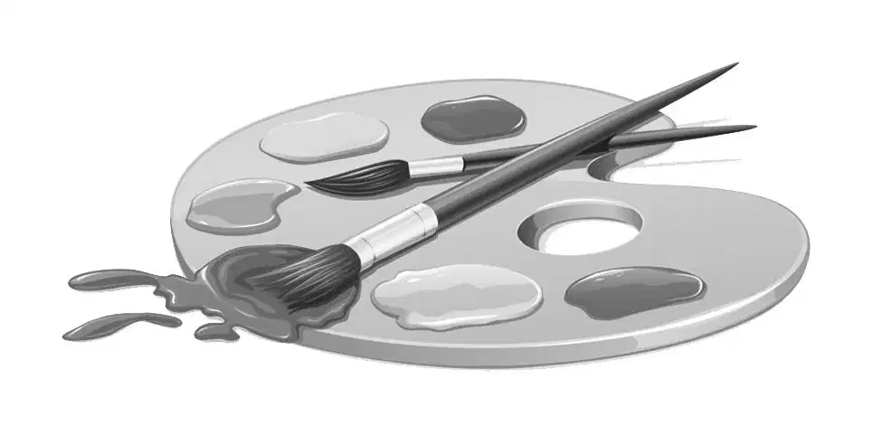
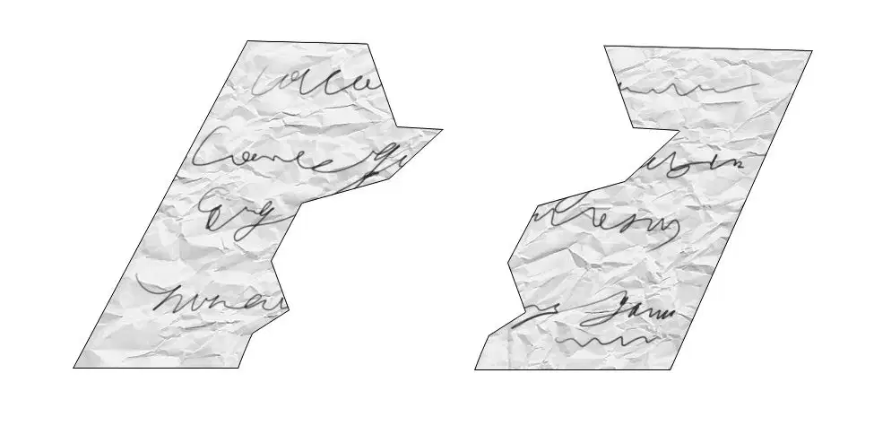
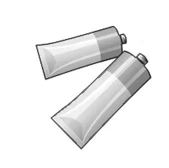
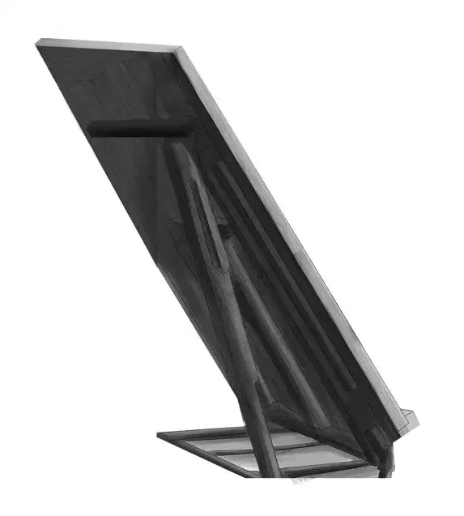
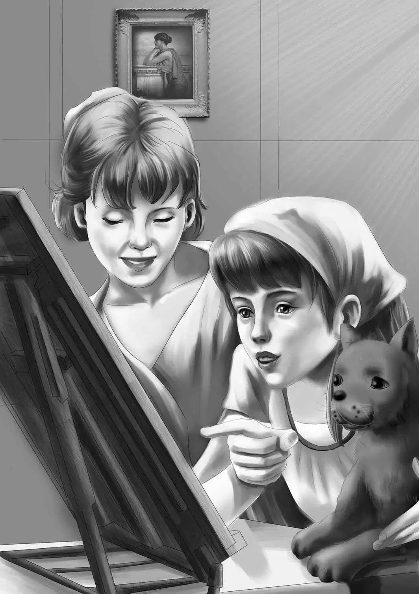

An Invitation

维莉还没来得及上车，大家就迫不及待地开始发问了。
“屋子里都发生了些什么？”班尼问道。
“你还好吗？”杰西则更担心这个问题。
“玛丽小姐今天没吓到你吧？”亨利问道。
维莉笑了起来。“整件事儿都让人惊喜得很，”她回答道，“我都不知道该从哪儿说起了。”
“那就从头开始讲吧！”班尼说。
“首先，”维莉说道，“咱们对于玛丽小姐的推断，全都错了——其他人也错了，她并不是画家。”
“但是……”班尼说。
“雷恩小姐——露丝·雷恩小姐，才是画家，”维莉解释道，“她个子很小巧，塔楼屋后面，有一扇大窗户的那间，就是她的工作室。”
亨利打断了她的话：“等等，你说的露丝·雷恩……我们都知道塔楼屋是属于雷恩家族的，但并没人提到过露丝·雷恩啊！”
班尼喃喃道：“露丝·雷恩？R.L.？噢，我明白了，项链盒上就是她名字的缩写！现在总算有些眉目了。”
杰西说：“这么说，塔楼屋里果然住着两个女人。”
“还有10只猫咪。”维莉补充道，“很有意思呢！只要你们进去待一会儿，就能闻到里面的气味。”
大家沉默了片刻，班尼又开口问道：“这么说，玛丽小姐是雷恩小姐的管家喽？”
“是啊！”维莉同意道，“雷恩小姐说她只喜欢猫咪，不爱和人打交道，可她对我却很好。也许她自己都没意识到，她其实很欢喜有人陪伴。”
“可能是因为你救了她的猫咪，她才觉得你还不错。”班尼说。
“雷恩小姐画完那张肖像了吗？”亨利问道。
维莉摇了摇头：“没有，她只用铅笔勾画了一下我抱着阿里的样子，她想要我明天同一时间再过去，还给了我这张纸条，我想她是怕我忘了。”
“我看看。”班尼说着，展开维莉递给他的纸条，读了起来，“‘请准备好10点过来，谢谢！’”
班尼突然开始摸索起他的口袋来，末了，摸出另一张纸条，他展开来，放在雷恩小姐的纸条旁边。
“看哪！”他说道，“现在我总算有点明白了。”
大家都看向那两张纸条。
“一模一样的纸！”维莉惊呼道。
“而且是一样的笔迹，我可以肯定！”亨利笑了起来，“看到‘谢谢’这几个字没？”
班尼赞同道：“我也是这么想的。可是，那句古怪的‘所有谢谢你’又是什么意思？雷恩小姐会那样写吗，维莉？”
维莉突然灵光一现，“让我再看看这两张纸条，”她说，“看哪，班尼，这个词应该不是‘全都’（All），而是‘阿里’（Ali），i和l很像。”
班尼得出了结论：“那么，纸条的意思是：‘阿里谢谢你，我们都谢谢你’，阿里巴巴是雷恩小姐最喜欢的猫咪，因此这纸条肯定是她写的，并且放到了我们的房车旁！哈，又一个谜团被解开了！”

“不是吧？”亨利提出了异议，“那张感谢信是在塔楼屋的草丛着火后才出现的，那时她们并不认识我们，更不知道我们住在哪儿，又怎能把纸条送过来呢？”
维莉说：“那我就不清楚了。不过，这两张纸条起码能证明，那两位小姐很害羞，我还从没见过像雷恩小姐和玛丽小姐那样害羞的人呢！”
“我真希望雷恩小姐也能给我画幅肖像！”班尼说，“说不定我就能发现，她是如何知道我们住在海滩上的。”
那天晚上，日落之前，李先生和理查从海滩上走来，这一次，他没有带探宝仪，他只是迫切地想知道维莉的探访情况如何。
听完事情的经过后，他说道：“有很多关于猫咪的名画都是出自露丝·雷恩笔下，而且，它们被不少人收购并珍藏。我还在纽约的一家店里见过她的一幅真迹呐！不过，相对于猫咪而言，我还是更喜欢狗狗一些。”
说完，李先生拍了拍理查，小家伙立刻摇了摇尾巴。
奥登兄妹陪着李先生在海滩上漫步，一直走到李先生的家附近。
“我想我再也不会半夜起来溜达了，”当奥登兄妹和李先生道晚安时，他说道，“我的意思是，我今晚可以睡个好觉啦。”他又立刻补充了一句。
当奥登兄妹走回房车时，班尼说道：“我觉得好奇怪，李先生说‘再也不会半夜起来溜达了’是什么意思？而且，说溜嘴以后，他看起来是一副很后悔的样子。”
亨利笑道：“你又来了！还想找新谜团，是吗？”
班尼不依不饶地说：“对啊！咱们还有好几个谜团没解开呢！最大的一个谜团就是：为什么玛丽小姐不想要那个项链盒？它明摆着和她或者雷恩小姐有关系啊！”
杰西插了进来：“这个问题，留着明天再说吧！或许到那时就会有答案了。现在呢，该上床睡觉啦！”
第二次拜访雷恩小姐时，维莉已经有充分的心理准备了，她知道眼前这个小个子画家是刀子嘴豆腐心，因此并不把那些生硬的话放在心上，她只是为这个瘦小的女子感到难过。
维莉坐到椅子上后，雷恩小姐说：“你想用什么姿势抱着猫咪都行，因为你的手臂我已经画好了，至于猫咪，我任何时候画它都可以。”
维莉注意到，雷恩小姐今天主要在上色，而不是勾画线条。她挥动画笔的速度飞快，简直就像在粉刷房子呢，维莉心想。

“您上色真快！”维莉不由赞叹道。
“必须得快啊，”画家回答道，“这种颜料在20分钟之内就会干，它不是油彩，是一种丙烯酸涂料。来，看着我，笑不笑都行。”
这句话把维莉逗乐了，她忍不住笑了一下，她知道雷恩小姐此刻正在画她的眼睛。
突然，没有任何预告，雷恩小姐宣布道：“好，这就够了，你后天再过来。”
维莉正准备起身往外走，雷恩小姐又说道：“你可以看看这张画像——要是你想看的话。”
“噢，真的吗？”维莉惊讶地问道，她看了看那幅肖像，“画得和我真像啊！”
“是啊，确实很像！今天完成得很轻松，一切都很顺利，色彩也恰到好处。”雷恩小姐看起来非常高兴。
维莉说：“这么美好的作品，您画它的时候，一定很开心吧？”
雷恩小姐只是耸了耸肩，没有说什么。
维莉问道：“您会把这幅画卖掉吗？”
“有可能。”
“我不希望人们认出画像上的是我，”维莉说道，“您不会把我的名字放上去的，是吗？”
“不会。”雷恩小姐生硬地说，“这幅画叫作‘女孩与猫’。”
“噢，谢谢您。”维莉说。
“不仅如此，”雷恩小姐继续说道，“我还会修改一下嘴巴的位置，这样看起来就不像你了。之前我还没为任何人改动过画像。”
“啊，您真是个好人儿！”维莉不由得脱口而出，“我知道画家都不喜欢改动原作的。”

雷恩小姐之前从未被人夸赞过“好人儿”，可这次，她真的觉得自己很好——这种感觉很奇怪，但是她喜欢。
维莉又说道：“不过还是请不要修改画像了，也许我的爷爷想买下它呢！我真心希望您可以为班尼画幅肖像，要知道没人能画他，因为他永远连一分钟都安静不下来。”
“要是我要求他每隔一会儿就盯着我一分钟，他做得到吗？”
“我想，他会尽力的。尽管他不乐意一动不动地坐着，不过，为了爷爷，他会做到的。”
“爷爷是谁？”雷恩小姐问道。
“爷爷？哦，我们的父母几年前就去世了，我们和爷爷一起住，他叫亨利·奥登——我哥哥也叫亨利，不过他的全名是亨利·詹姆斯·奥登。我爷爷是世上最好的爷爷。”
“听起来你有个非常幸福的家庭。”雷恩小姐说道，维莉听出她的语气里透着淡淡的忧伤，一扫之前的生硬严厉。
维莉沉吟了一会儿，开口说道：“我有个主意，也许您会喜欢。我们经常在海滩上举办野餐会，因为大家欢喜在露天吃饭。您看，您和玛丽小姐能不能抽出中午的时间来，和我们一起共进午餐呢？我们住得不远，我很希望介绍亨利、杰西和班尼给您认识呢！”

雷恩小姐摇了摇头，谢绝道：“算了，我们会感到不自在的。”
“哦，天哪！”维莉说，“要是你们能来，我们会多开心啊！其实事情很简单，亨利中午开车来接你们，你们只需要坐上车就行，其他什么都不用做。”
也许是维莉温柔的声音和笑容打动了雷恩小姐，她终于松口了：“你这个妙人儿啊！好吧，我们去，你刚才说的是什么时间？”
“噢，中午！要不咱们就定在12点15分吧，班尼通常都会在这个点嚷嚷着要吃饭，他总是饿得快。我要赶紧去通知杰西。”
“必须要通知她吗？”
“是啊，杰西是大厨，她很好客——总希望有客人来共进午餐。”
雷恩小姐叫来了玛丽：“玛丽，今天中午咱们出去吃午餐。”
玛丽小姐一脸的惊讶。
维莉转眼看到蓝色车上正等候着她的家人，于是向她们提议道：“可以去见见我的家人吗？”
两位女士随维莉走到门口，班尼和亨利立刻从车上下来，维莉互相介绍了一下，女士们逐一跟男孩们打了声招呼“你好”，并僵硬地点了点头。
而对于这两位碧乌镇的神秘人物，奥登兄弟则尽量控制着自己的好奇心。
当蓝色汽车行驶在回家的路上时，维莉说道：“杰西，我已经邀请了雷恩小姐和玛丽小姐中午来野餐——就在今天。”
“那她们真的会来吗？”班尼问道。
“会啊，她们会的！”维莉很是笃定。
亨利笑着说：“维莉，有时你真能给我们意外的惊喜。”
“也没那么难啦！”维莉说，“我想，以前之所以没人邀请过雷恩小姐她们，主要是大家觉得她们很不合群，其实她们只是害羞而已。”
“而且还挺独立，”杰西补充道，“她们觉得，就算不靠别人，自己也可以过得很好。”
班尼说：“你们有没有注意过，猫也是这样的特性？它们总是很独立，而且喜欢自由，和狗狗完全不一样。”
“或许，这就是为什么塔楼屋里住了10只猫咪的原因。”亨利说，“不过我更想知道，那张给我们的纸条，到底是不是雷恩小姐和玛丽小姐留下的。”